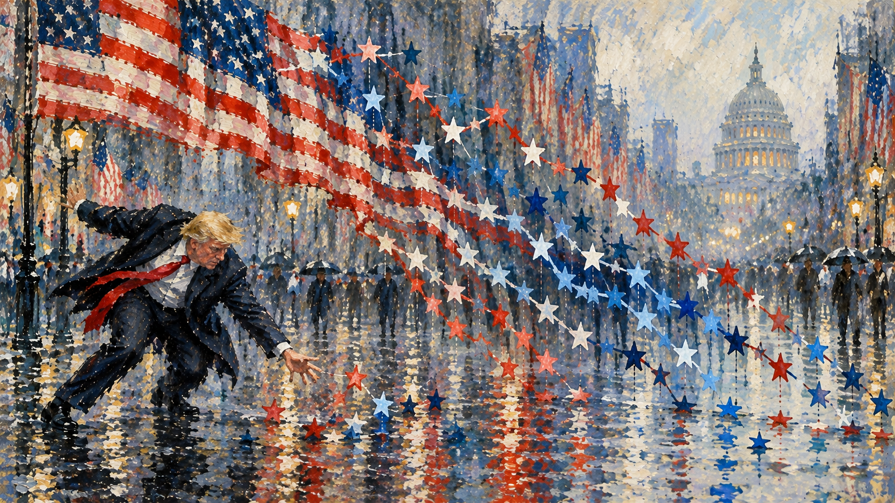
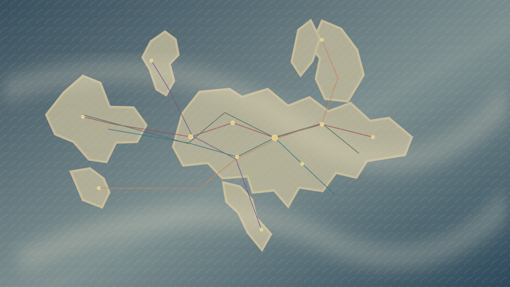
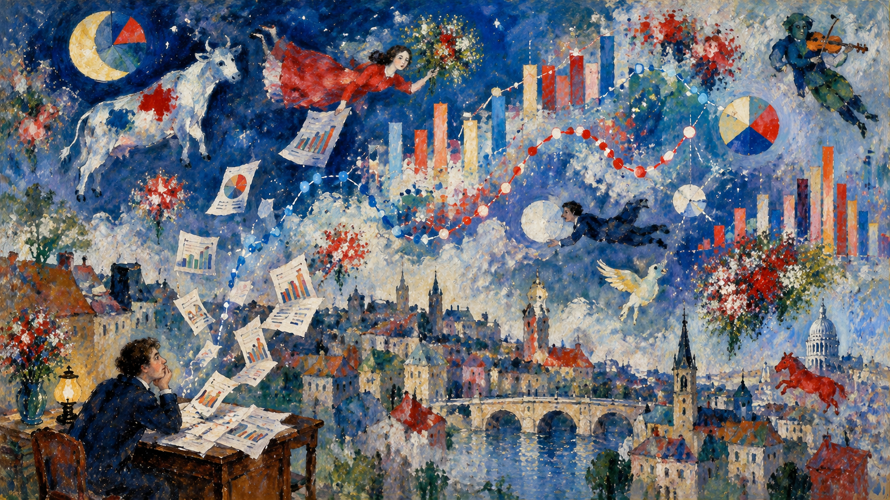

USA · MIDTVEJSVALGET · 3. NOVEMBER 2026
Kampen om Senatet
Meningsmålinger, tendenser og de mandater, der er i spil.
PUBLICERET 11. OKTOBER 2026

EUROPA · JERNBANER · KORT & DATA
De spor, der binder Europa sammen – og forbindelserne, der mangler.
UDFORSK PROJEKTETEuropas tognet
USA · MIDTVEJSVALGET · 3. NOVEMBER 2026
Meningsmålinger, tendenser og de mandater, der er i spil.
PUBLICERET 11. OKTOBER 2026

Er der andre tendenser, begivenheder eller spørgsmål, som fortjener at blive undersøgt og gjort synlige? Send dit bud.